Build qualitative evidence
Understand how the live Marketplace was being experienced and use that evidence to inform a proposed community and operating model.
From fragmented capability to a connected ecosystem: research into the human and behavioural conditions shaping API discovery, reuse and collaboration.
The API Marketplace already existed as a live platform. The unresolved question was human: whether teams trusted, found and reused what was already there. Leadership suspected collaboration, discoverability and reuse were breaking down, but there was no structured evidence showing where or why.
Understand how the live Marketplace was being experienced and use that evidence to inform a proposed community and operating model.
Low reuse and fragmented collaboration were visible, but the mechanism behind them was unclear.
Client identity, organisational structure, verbatim quotes and sensitive artefacts are anonymised or generalised.
I designed the stakeholder interview protocol, independently led 9 of 16 interviews, facilitated affinity mapping and helped facilitate the ideation session. That continuity mattered: it allowed subtle cross-cutting signals to survive from conversation through synthesis instead of disappearing in handoffs.
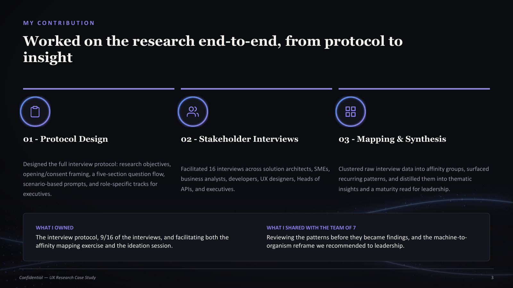
Understand how the ecosystem is experienced across product, platform, architecture, engineering, delivery and business teams.
Identify barriers and opportunities related to collaboration, discoverability, reuse and knowledge-sharing.
Assess organisational readiness for broader ecosystem enablement.
Establish qualitative indicators of ecosystem maturity to inform operating model and governance decisions.
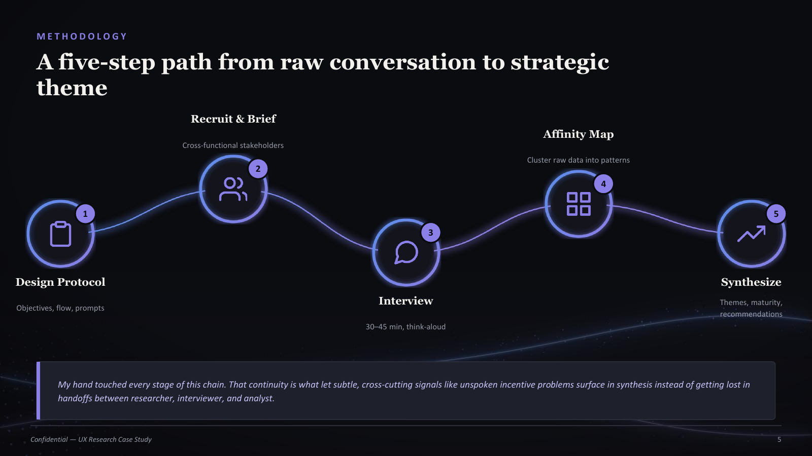
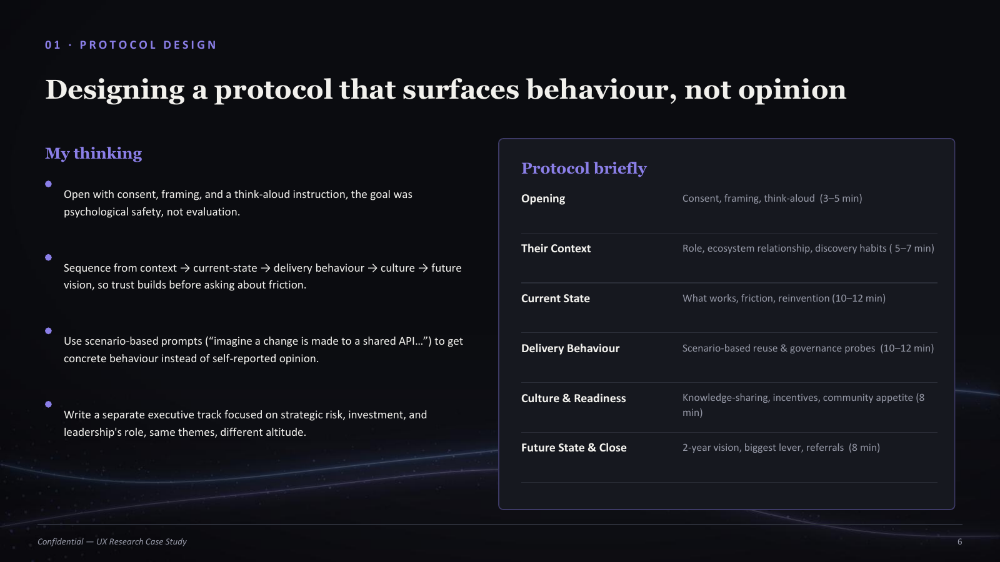
The protocol deliberately moved from context to current-state behaviour, delivery friction, culture and then future vision. I opened with consent and psychological-safety framing, used scenario prompts to make behaviour concrete, and created a separate executive track at a more strategic altitude.
“What do you think?” can produce polished opinion. “Walk me through a recent example” exposes actual workarounds, dependencies and decisions.
Sessions ran for 30–45 minutes and included solution architects, SMEs, business analysts, developers, UX designers, Heads of APIs and executives/business stakeholders. I framed the work as diagnosis rather than audit, disclosed observers upfront, followed energy beyond the script and paid attention to hesitation around ownership and incentives.
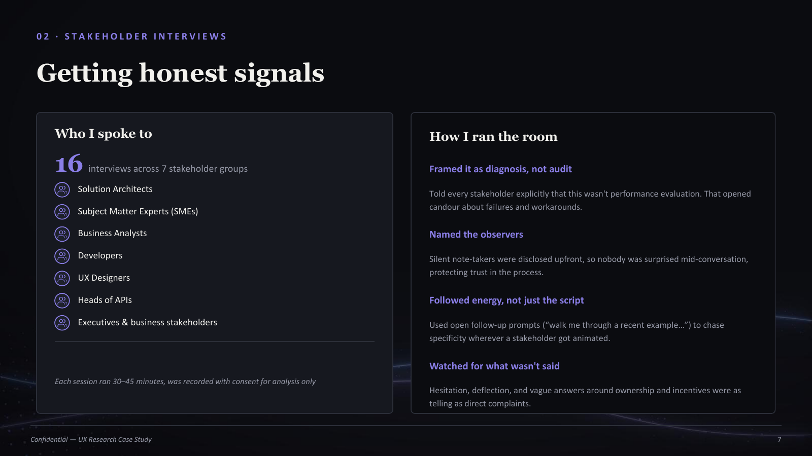
I broke transcripts into single observations, clustered them bottom-up by underlying behaviour, labelled repeated patterns and then weighted clusters by frequency, intensity and business impact. The board ultimately sharpened into 20 insights and behaviour-change questions that became inputs to ideation.
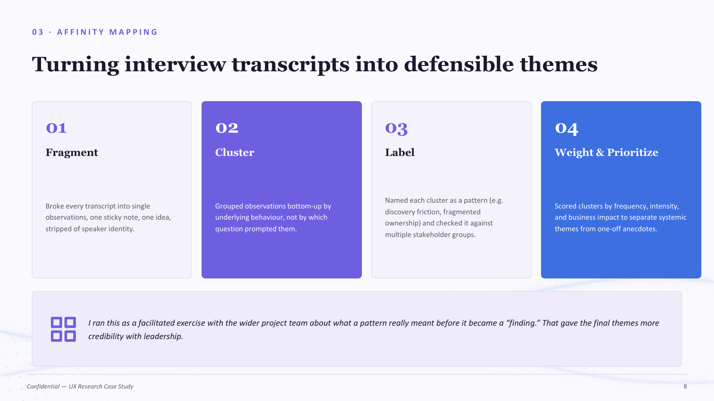
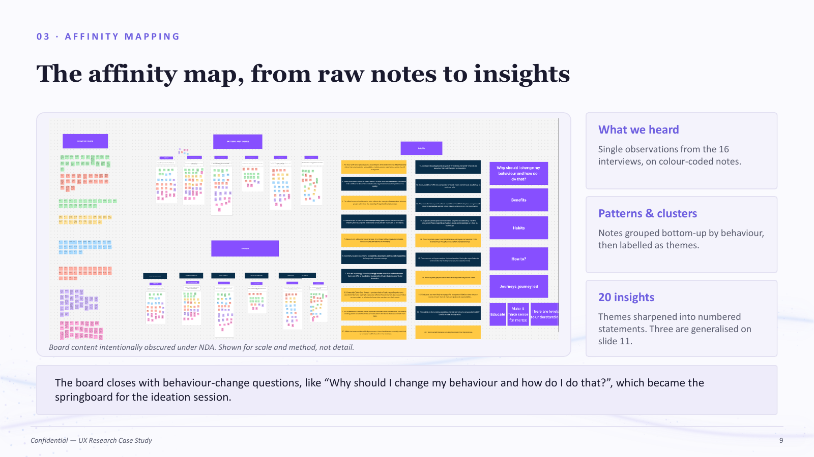
The research shifted the conversation away from a purely technical diagnosis. Poor discoverability mattered, but the more durable blockers were habits, incentives, trust and ownership.
Teams relied on tribal knowledge and personal networks; confidence in “what exists” was low.
Unclear accountability discouraged reuse and made governance feel like friction.
Rebuilding often felt safer than locating and trusting someone else’s capability.
Process was associated with delay, pushing teams toward workarounds.
Established ways of working outweighed the case for a new shared model.
Recognition and delivery pressure favoured shipping something new over contributing to shared capability.
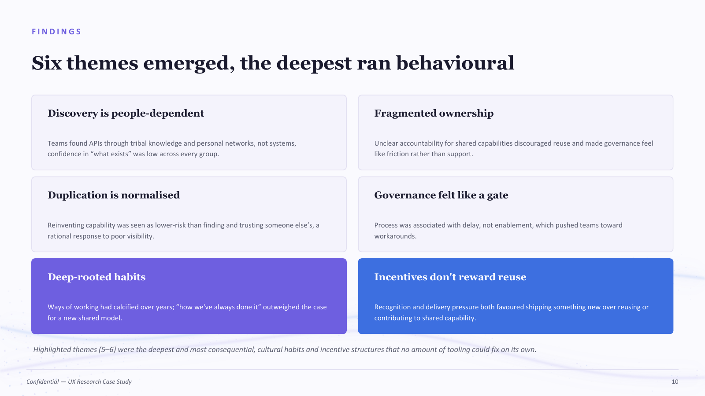
Insight: teams trusted known people over listings.
Implication: make ownership and named contacts part of discovery.
Insight: building fresh felt lower risk than vetting reused work.
Implication: lower the cost of trusting shared APIs.
Insight: reuse took effort without recognition.
Implication: reward reuse and contribution as valued work.
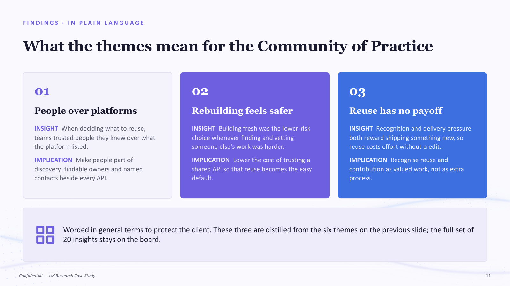
I shared the evidence back, reframed themes as behaviour-change questions, ran mixed-group divergence and then converged around ideas the room supported. This let stakeholders confirm, challenge and sharpen the research before design direction was formalised.
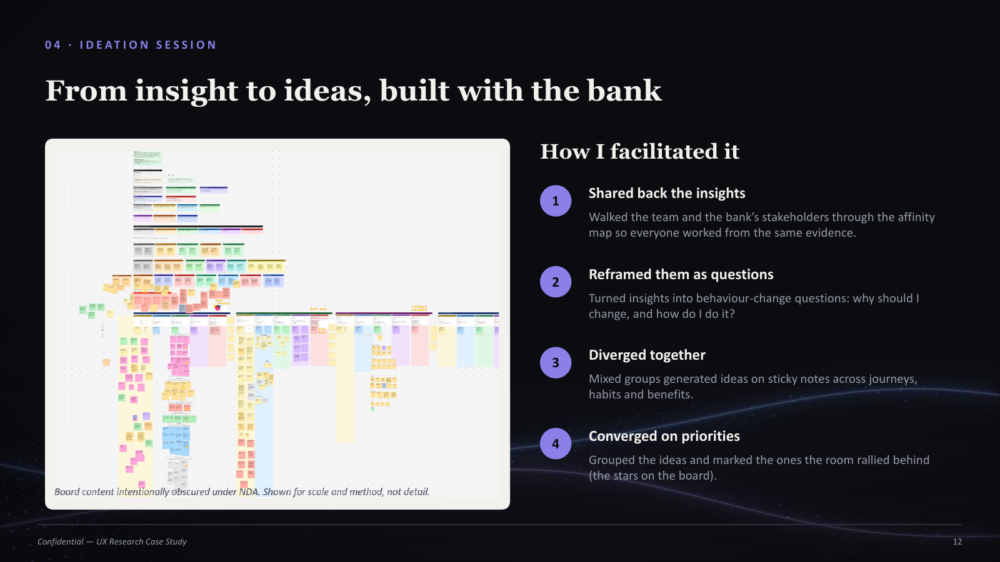
Because the deepest blockers were habits and incentives, tooling alone would not fix them. The recommended reframe shifted the operating model from fixed, centrally controlled process toward distributed ownership, adaptation and behaviours that reward reuse.
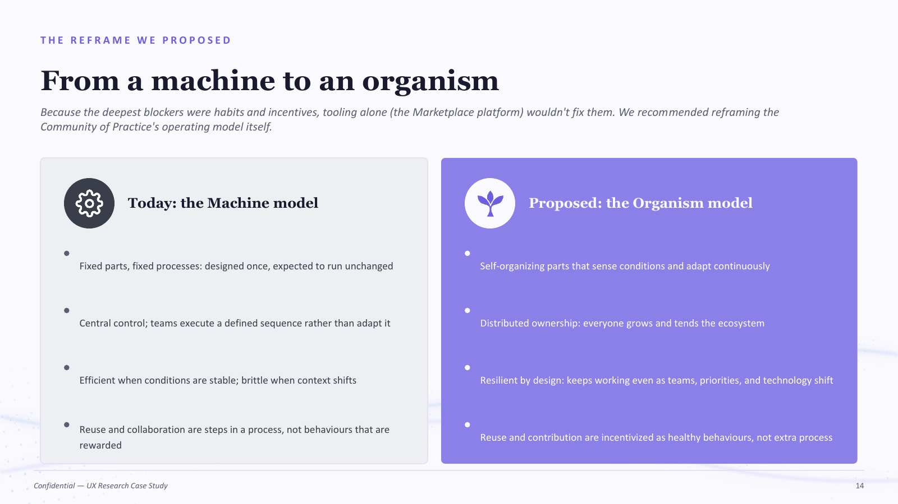
The themes, maturity read and machine-to-organism reframe were delivered as input to the proposed community design. The work contributed a traceable evidence base, a stronger problem statement and a shared language leadership could use to discuss trade-offs.
The deepest blockers were rarely technical. Staying close to the work from protocol through synthesis made that visible. I would protect that continuity earlier in future discovery work and resist proposing tooling before testing for behavioural barriers.
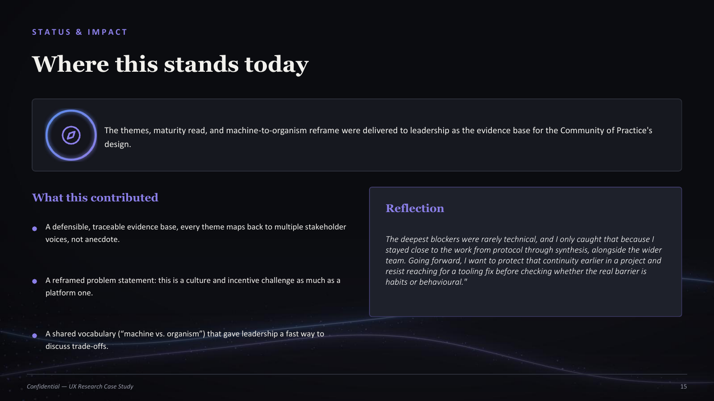
The PDF contains the full 15-page NDA-safe case study.
Download full case study ↓